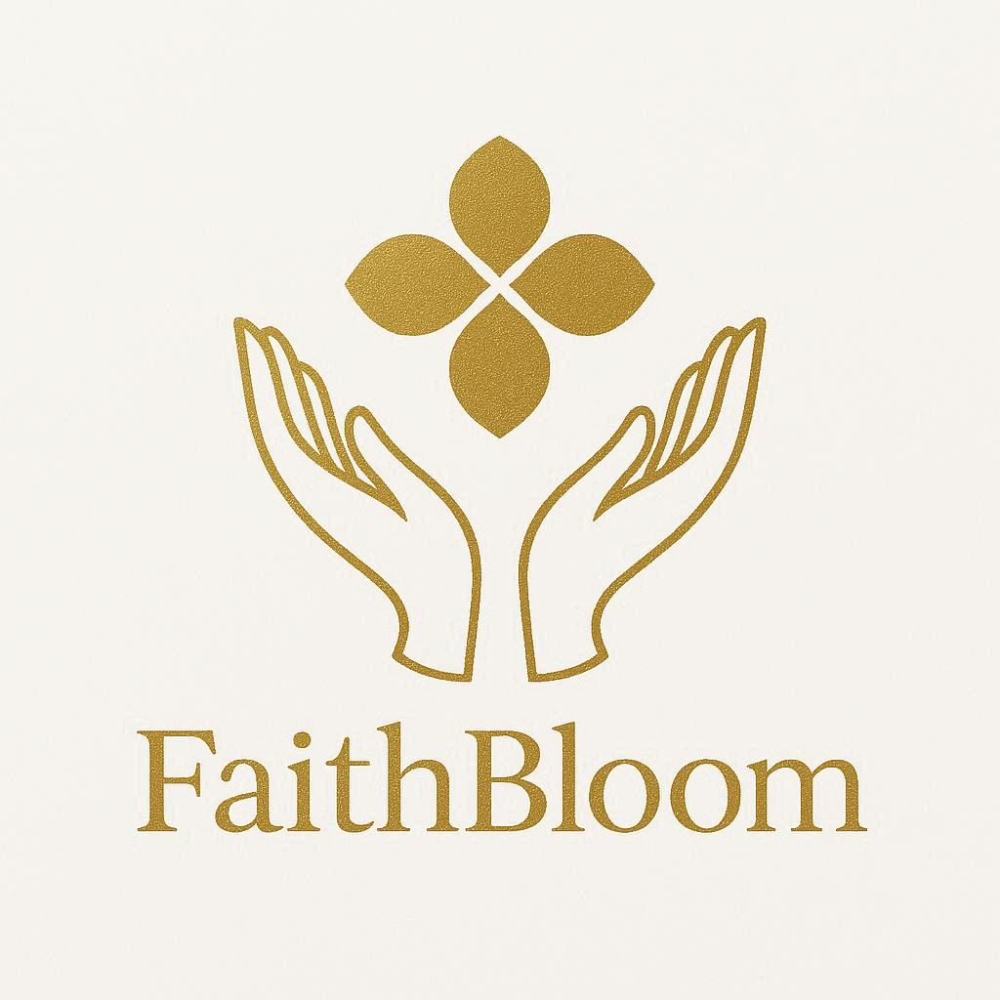

FaithBloom projekat je zamišljen kao aplikacija koja ima svrhu društvene mreže koja
ima za cilj upoznavanje ljudi, ali na malo inovativniji način. Aplikacije koje već
postoje, poput Facebook-a, Instagram-a služe da se povežemo ne samo sa prijateljima,
rodbinom i poznanicima, ali upoznavanje sa nekim u svrhu partnera i upoznavanje je
drugačije, jer ima dosta osoba koje nisu zainteresovane za to, ili sumnjaju u vaš
iznenadni upad u dm, ili su već zauzete, pa se često desi da vaša poruka ostane u
njihovom inbox-u neprimećena. To je kada pričamo o partnerima.
Postoji jedna mnogo potcenjena vrsta upoznavanja, a to je upoznavanje sa novim
prijateljima. Sve više je popularno obrazovanje od kuće za razliku od klasičnog
sistema školovanja, kada upišete dete u vrtić ili predškolsko, pa se ono školuje
kroz osnovno, srednje i bira da li će da ide na više obrazovanje. Većina ljudi
upozna prijatelje za ceo život a neko partnere, a neko jedno i drugo kroz taj
sistem. Ali ne živimo u utopiji, pa naravno desi se slučaj da neko ne upozna ni
jedno ni drugo, a neko ni ne ide kroz sistemsko školovanje. To je jedan motiv ove
aplikacije, da u velikoj meri pomogne ovim ljudima i da im da drugu šansu da upoznaju
ili prijatelja, prijateljicu, osobu s kojom mogu da izađu na kafu ili partnera.
Postoji još jedna kategorija koja je takođe potcenjena i malo se priča o njoj, a to
su oni ljudi koji ne dele isti sistem vrednosti u današnjem društvu koje skreće samo
u jedan pravac, a na našim prostorima to biva još haotičnije, i sve je teže upoznati
istomišljenike. Upravo ovo je jedan od ključnih motiva naše aplikacije, ne da spajamo
ljude samo na osnovu njihovih interesovanja, što će takođe biti uključeno, ali i da
ih spajamo na osnovu zajedničkog sistema vrednosti.
Treba naglasiti da smo još uvek mali tim, pa ne možemo sve da odradimo preko noći.
Prvo smo u planu imali da napravimo simulaciju društvene mreže (dakle ovo je alfa
verzija, samo prva probna etapa, ne znači uopšte da će da liči na krajnji produkt)
čiji demo će da ima funkcionalnosti takve da imate simulaciju i punu kontrolu vaše
društvene mreže, možete da kreirate, brišete razgovore, korisnike, objave, da
komentarišete, uređujete svoj, tuđe profile, itd itd. Čisto da bismo spojili lepo
i korisno. Vi kao korisnici da testirate, eksperimentišete i da nam javite nešto
što biste žeželi da popravimo, promenimo, uredimo, ili da se jednostavno zabavite
i vidite kako smo otprilike zamislili izgled projekta. Vrlo ambiciozan projekat
zahteva i vrlo ambicioznu simulaciju, zar ne 😀.